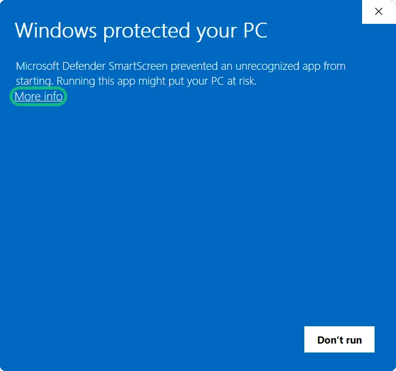
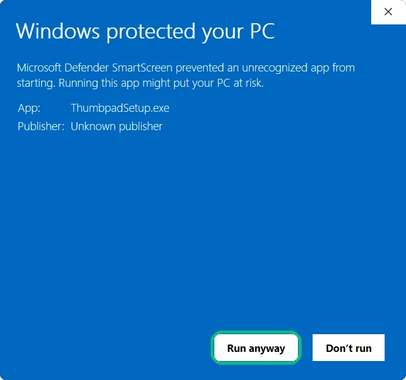
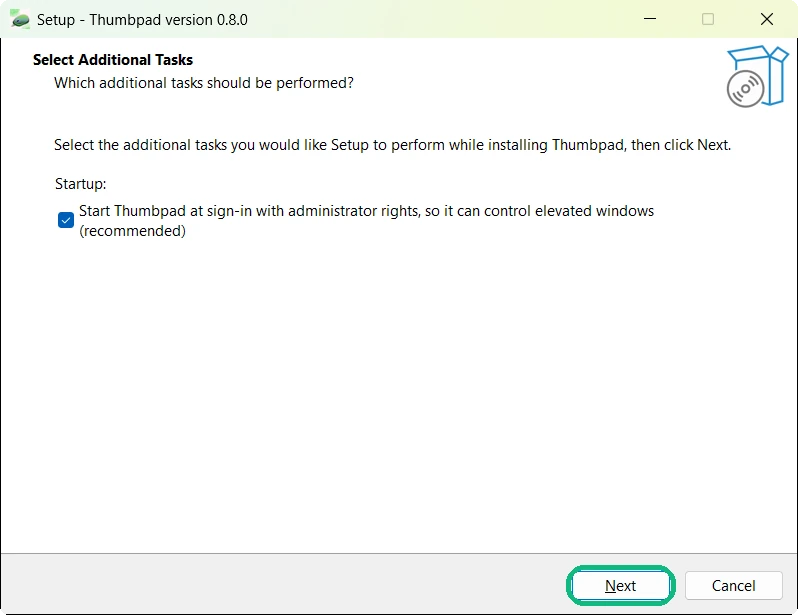
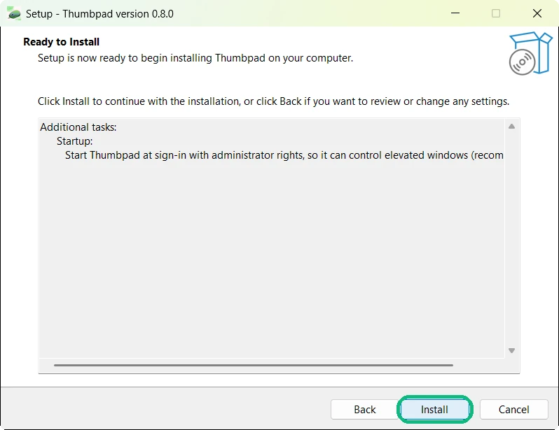
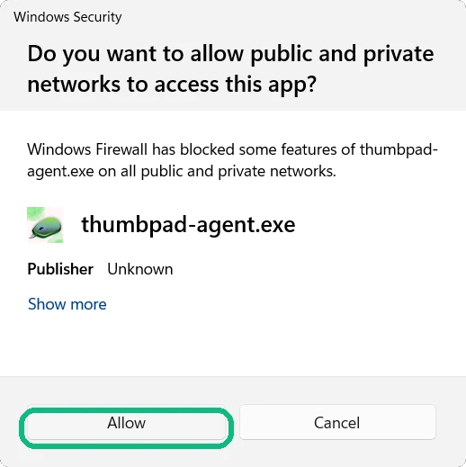
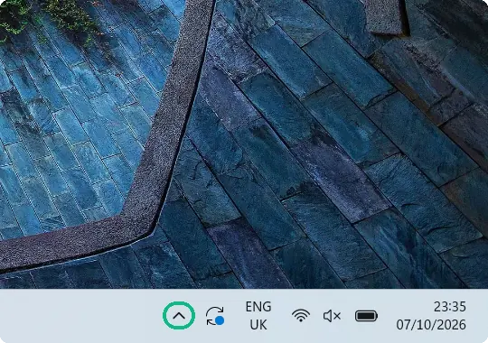
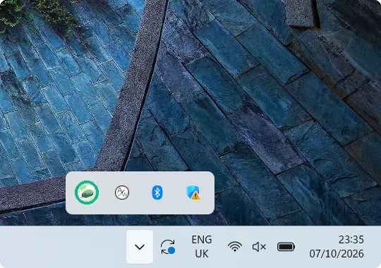
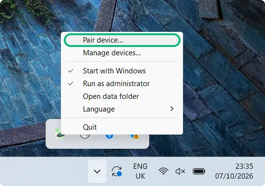
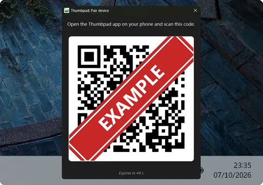

Thumbpad
把 Android 手机变成 Windows 电脑的触控板、键盘，以及媒体和音量遥控器，连上家里的 Wi-Fi 就能用。
下载 Windows 版支持 Windows 10 和 11 · 免费 · 几秒即可装好
观看设置视频
开始设置
- 运行 ThumbpadSetup.exe。它暂时还没有代码签名，所以 Windows 可能会弹出这个蓝色窗口：先点击更多信息，再点击仍要运行。

1
2 - 依次点击 Next 和 Install。（安装程序目前只有英文版。）如果 Windows 询问是否允许更改，请点击“是”，这样 Thumbpad 会随 Windows 一起启动。安装完成后会打开一个带二维码的配对窗口。

1
2 - Windows 询问网络访问权限时，点击允许。手机通过家里的 Wi-Fi 连接电脑。

- 在 Android 手机上从 Google Play 安装 Thumbpad 应用。手机和电脑需要连接同一个 Wi-Fi 网络。
- 在电脑上，打开时钟附近的隐藏图标（^），右键单击 Thumbpad 图标并选择配对设备…。然后在应用中点按配对电脑，扫描二维码。只需配对一次。

1
2
3
4
获取手机应用
Thumbpad Android 版
在 Google Play 免费下载，与上方的 Windows 程序配对使用。